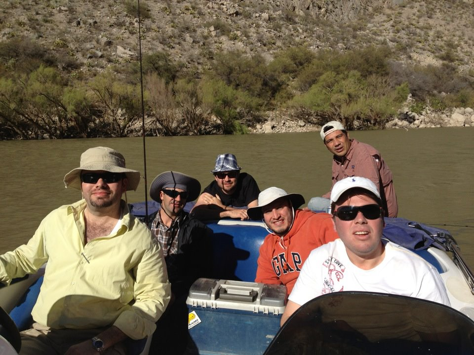

Este soy yo junto a mi padre, pilar de mi vida.
Federico Sánchez García
12 years as Software Architect analyzing, designing, building and implementing IT projects.
Integrating technology with ERP’s (Microsip, Aspel, Contpaq, RMS Microsoft).
Development of Frameworks for agile programming (WinForms [Delphi/c#], HandHeld[c#]).
The main technologies i've used for these solutions are: C#, Visual Studio 200X, Web Services, Firebird, SQL Server, SQL Server mobile, Microsoft Framework and C.F. 2.0/3.0 and 3.5, php.
Design: UML (OOP), Multiple layer (GUI, Business objects and Data access layer) use of design patterns.
Deliverables: Case uses, Sequence diagrams, Class Diagrams, Delivery diagrams, Apis, Executables.
16+ years as a Software Engineer, developing, and implementing programs of Inventory, Clients, Suppliers, Sales, Purchase control, Point of sale, APIs and Reporting’s framework development.
Estudios
Instituto Tecnológico y de Estudios Superiores de Monterrey Campus Laguna (ITESM)
Torreón Coahuila, México
to Master in Quality and Production
Instituto Tecnológico y de Estudios Superiores de Monterrey Campus Laguna (ITESM)
Torreón Coahuila, México
to BS in Computer Sciences
LanguagesSpanish native, English fluent, French intermediate.
TECHNICAL & MANAGERIAL SKILLS
Primary Profile: Development & Technical Architect.
Secondary Profile: Business Analyst. Communication and Interpersonal Skills, Project leader.
Databases: Interbase, Firebird, MySql, SQL Server 5.0, SQL Server CE.
Other: PMP(not certified), MS Project, Rational Rose(basic), Enterprise Architect.
COURSES
PMP Curso de certificación
Given by: Avanza proyectos, PMI Partner in Querétaro, México.
Place: On-line.
PHP and MySql
Given by: Tecnologico de Monterrey Campus Laguna.
Place: Tecnologico de Monterrey Campus Laguna.
Curso práctico de ADOO con UML
Given by: Milestone consulting.
Place: CANACINTRA, Monterrey. NL.
Microsoft Visual C# .NET (Updating to VS 2005)
Course 2364B.
Course 2734B.
Microsoft official courses.
Given by: InterSoftware, Microsofts Partner.
Place: Microsip.
Microsoft Visual C# .NET (Visual Studio 2003)
- "Programación en C# para el Microsoft .NET Framework."
- "Desarrollo de aplicaciones .NET para Windows."
- "Programación con ADO.NET."
- "Desarrollo de Servicios Web XML usando ASP.NET."
- "Construcción de Aplicaciones Web usando Microsoft ASP.NET."
- "Desarrollo de Aplicaciones Web para dispositivos móviles."
Given by: InterSoftware, Microsofts Partner.
Place: ITESM Campus Laguna - Torreón, Coah.
UML – Análisis de sistemas orientado a UML & Diseño orientado a objetos con UML.
Given by: Innevo.
Place: ITESM Campus Laguna - Torreón, Coah.
Experiencia
Comarca ti
Software architect
Torreón Coahuila, México
From to Date
Integration of technology as client’s needs.
ERP’s Consultant.
Administration & Sales.
Microsip
Software Eng
Torreón Coahuila, México
From to
Sobre mí
Me gusta hacer deporte, el futbool es mi deporte favorito.
Equipo "Real familia", Club deportivo "Parque españa"
... me gusta correr.
Carrera 10k Victoria
... me gusta ir de pesca.

Presa Francisco Zarco
Me gusta ir al futbol con mis amigos y familia.
El equipo de casa es el Santos Laguna
TSM Torreón Coahuila, México
Me gusta ir a conciertos y más si son de rock.
Concierto de "The wall", Roger Waters
Me gusta ir a los toros.
Coliseo Centenario Torreón Coah., México
Me gusta ir a ver carreras de la Formula 1.
Carrera Formula 1, Austin Texas 2015
Me gusta jugar baraja con mis amigos.
Jugada de Baraja 24 Diciembre 2015
Esta es mi familia.
Boda angelica 2016